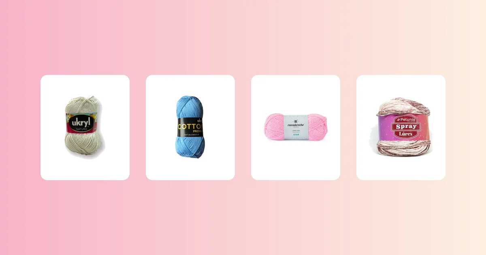

Proyectos de crochet
Cómo tejer un vestido a crochet paso a paso
El vestido a crochet es la prenda estrella del verano: fresco, liviano y con un estilo artesanal que no se consigue en tienda. En esta guía tienes la tabla de tallas, el paso a paso del cuerpo, los tirantes, la falda, cuántos ovillos comprar y qué hilo elegir para que tu vestido quede con caída perfecta.

Materiales para tejer tu vestido
Un vestido a crochet es el proyecto perfecto para lucir en verano y también un regalo de nivel avanzado que impresiona a cualquiera. Si ya dominaste el crop top a crochet, el vestido es el siguiente paso: un cuerpo ajustado (o semi ajustado) más una falda que cae desde la cintura o las caderas.
Para empezar necesitas:
- Entre 5 y 9 ovillos de 100 g, dependiendo de la talla, el largo de la falda y el grosor del hilo. Más abajo tienes la tabla exacta por hilo.
- Un ganchillo acorde al hilo: 3 a 4 mm para hilos de algodón finos, 4 a 5 mm para hilos semi gruesos. Si no sabes qué medida usar, revisa la guía de qué aguja o ganchillo usar para tejer.
- Marcadores de puntos: al menos 4, para marcar las sisas, el centro delantero y la línea de cintura.
- Aguja lanera, tijeras y cinta métrica.
El hilo ideal para un vestido de verano necesita dos cosas: caída para que la falda no quede rígida, y frescura para que no dé calor. Estas son las mejores opciones del catálogo de VendoLanas:
- Hilo de algodón 100%, el clásico para verano: Hilo de Algodón Celeste, Hilo de Algodón Nude o Hilo de Algodón Menta. Con 225 m por ovillo, rinden mucho y dan un tejido fresco con definición de punto. Toda la gama en marca Ukryl.
- Hilo Ukryl Natura, suave y con cuerpo: Hilo Ukryl Natura Blanco, Hilo Ukryl Natura Crudo o Hilo Ukryl Natura Rosado. Son 100 m por ovillo, con un tacto más suave que el algodón puro y un leve brillo natural.
- Lana Star Revesderecho, fina y liviana: Lana Star Revesderecho Coral o Lana Star Revesderecho Rosado, con 250 m por ovillo. Da un vestido ligero, ideal para entretiempo. Toda la línea en lana Revesderecho.
- Petunia Spray Lúrex, para un vestido con brillo: Petunia Spray Lúrex Rosa Palo o Petunia Spray Lúrex Verde Agua, con hilo de lurex integrado que da un brillo sutil sin ser estridente. Perfecta para un vestido de fiesta o salida nocturna. Toda la línea en marca Petunia.
Cómo se arma un vestido a crochet
Un vestido básico de crochet se compone de tres zonas que se trabajan en secuencia:
- Cuerpo superior (corpiño): dos paneles (delantero y espalda) que van desde la cintura hasta los hombros, con forma en las sisas y tirantes o mangas cortas.
- Falda: se teje directamente desde la línea de cintura del cuerpo, hacia abajo, con aumentos graduales para dar vuelo.
- Tirantes o mangas cortas: tiras que conectan el frente con la espalda sobre los hombros, o pequeñas mangas que cubren parte del brazo.
También se puede tejer el vestido como un tubo continuo (sin costuras laterales en la falda), trabajando en redondo desde la cintura. En esta guía usamos el método de paneles separados para el cuerpo y falda en redondo, porque es más fácil ajustar las sisas y el escote.
Si ya tejiste un chal a crochet, conoces los aumentos graduales que también usarás en la falda del vestido. Y si hiciste un bolso a crochet, la técnica de tejer en redondo te resultará familiar.
Tabla de tallas para el vestido
Las medidas están pensadas para un vestido de ajuste semi entallado con falda hasta la rodilla. Si prefieres un vestido más suelto, suma 4 cm al ancho del cuerpo. Para una falda más corta o más larga, ajusta solo el largo de falda.
| Talla | Contorno de pecho | Ancho cintura | Largo cuerpo (cintura a hombro) | Largo falda |
|---|---|---|---|---|
| S | 84 cm | 72 cm | 36 cm | 50 cm |
| M | 90 cm | 78 cm | 38 cm | 52 cm |
| L | 98 cm | 86 cm | 40 cm | 54 cm |
| XL | 106 cm | 94 cm | 42 cm | 56 cm |
Para conocer mejor los tipos de lana e hilos y elegir el grosor correcto antes de empezar, revisa nuestra guía completa.
Muestra de tensión
Antes de calcular la cadena base, teje un cuadrado de muestra de al menos 12 x 12 cm con tu hilo y ganchillo. Lávalo como lo lavarás puesto, déjalo secar y mide al centro cuántos puntos y hileras entran en 10 cm. Si nunca has hecho una muestra, en la guía de cuánta lana necesito para tejer está el método completo.
| Dato | Valor |
|---|---|
| Puntos en 10 cm (punto alto) | 18 puntos |
| Hileras en 10 cm | 10 hileras |
| Ancho del panel delantero (mitad contorno pecho + 1 cm) | 46 cm |
| Cadena base | 18 ÷ 10 x 46 = 83 puntos + 3 de altura |
Repite el cálculo para el panel trasero (que es igual al delantero) y para el largo del cuerpo hasta la sisa.
Paso 1: teje el cuerpo (delantero y espalda)
El cuerpo del vestido va desde la línea de la cintura hasta los hombros. Ambos paneles se tejen igual hasta la sisa; después el delantero lleva un escote más profundo.
Panel delantero
- Haz la cadena base (83 puntos + 3 cadenas de altura para talla M con Hilo de Algodón).
- Teje en punto alto recto hasta la altura de la sisa: unos 20 cm desde la cintura para talla M (eso son 20 hileras con esta tensión).
- Forma la sisa: al inicio de las 2 hileras siguientes, salta los primeros 5 puntos (haz 5 cadenas de aire y empieza en el 6.° punto). Esto abre el espacio para los brazos.
- En las 2 hileras siguientes, haz una disminución al inicio y al final (teje 2 puntos altos juntos). Pierdes 2 puntos por hilera.
- Sigue recto 6 hileras más.
- Forma el escote: divide el trabajo por la mitad. Teje solo la mitad izquierda: haz una disminución en el borde del escote cada hilera durante 4 hileras. Remata dejando 60 cm de hebra.
- Vuelve al centro y repite en espejo para la mitad derecha.
Panel trasero
- Teje igual que el delantero hasta completar la sisa.
- El escote trasero es menos profundo: cuando falten 4 cm para el largo total del cuerpo, divide y haz solo 2 disminuciones por lado en el escote. Remata.
Paso 2: teje la falda
La falda se teje desde la línea de cintura del cuerpo hacia abajo. Primero unes los dos paneles por los laterales con punto raso o costura, y luego levantas puntos alrededor de toda la cintura para tejer en redondo.
- Unión lateral: coloca el panel delantero sobre el trasero, derecho con derecho. Cose los costados desde la cintura hasta la sisa con punto raso o surjete.
- Levanta puntos: con el derecho del tejido hacia ti, engancha el hilo en la primera cadena base del panel trasero. Teje 1 punto alto en cada punto de la cadena base, dando toda la vuelta (delantero + trasero). Deberías tener unos 166 puntos en la vuelta (83 x 2 para talla M).
- Primeras 6 vueltas: teje recto en punto alto, sin aumentar ni disminuir, para que la falda caiga desde la cintura sin abrirse de inmediato.
- Aumentos para el vuelo: a partir de la vuelta 7, haz 8 aumentos repartidos por vuelta cada 4 vueltas. Marca 4 puntos equidistantes en la vuelta (costados y centros) y haz 1 aumento antes y 1 después de cada marca. Eso suma 8 puntos por ronda de aumentos.
- Sigue tejiendo con la pauta de aumentos cada 4 vueltas hasta alcanzar el largo de falda deseado (52 cm para talla M).
- Borde inferior: teje 2 vueltas de punto bajo para que el ruedo quede plano y no se enrolle. Remata.
Paso 3: tirantes o mangas cortas
Los tirantes son la parte más sencilla del vestido, pero definen mucho el estilo. Tienes varias opciones:
Tirantes simples
- Identifica el borde del hombro en el panel delantero y el trasero (los últimos puntos antes del escote).
- Engancha el hilo en el borde delantero. Teje una cadena de 25 a 35 puntos (prueba sobre tu hombro para el largo justo).
- Une la cadena al borde del hombro del panel trasero con un punto raso.
- Teje 2 a 4 hileras de punto bajo sobre esa cadena para hacer un tirante de 2 a 3 cm de ancho.
- Repite del otro lado.
Mangas cortas tipo flutter
- Levanta puntos alrededor de toda la sisa (unos 60 a 70 puntos para talla M).
- Teje 5 a 8 vueltas en punto alto, haciendo 2 aumentos repartidos por vuelta para dar un poco de vuelo.
- Termina con 1 vuelta de punto bajo. Repite en la otra sisa.
Si quieres repasar la técnica de tirantes ajustables, revisa cómo se tejen en la guía del crop top a crochet. Para aprender sobre aumentos en redondo, la guía del chaleco a crochet tiene buenos ejemplos.
Remate y bloqueo
Esconde todas las hebras sueltas con la aguja lanera, pasándolas por el revés del tejido a lo largo de al menos 5 cm. Luego bloquea la prenda: mójala con agua fría, escúrrela sin retorcer y extiéndela sobre una toalla limpia, estirando la falda con suavidad para que caiga pareja. Déjala secar en plano, lejos del sol directo. Para el cuidado posterior, sigue la guía de cómo lavar y cuidar la lana.
Cuántos ovillos necesitas según el hilo
Las cantidades son para un vestido talla M en punto alto con falda hasta la rodilla, con un margen del 15% ya incluido. Para punto bajo suma un 30% extra.
| Hilo | Grosor | Metros por ovillo | Talla S | Talla M | Talla L | Talla XL |
|---|---|---|---|---|---|---|
| Hilo de Algodón | Fino | 225 m | 4 | 5 | 6 | 7 |
| Ukryl Natura | Semi fino | 100 m | 7 | 8 | 10 | 12 |
| Lana Star Revesderecho | Fino | 250 m | 4 | 5 | 6 | 7 |
| Petunia Spray Lúrex | Semi fino | 100 m | 7 | 9 | 11 | 13 |
Si quieres afinar tu cálculo personal, usa la fórmula de la guía de cuánta lana necesito para tejer multiplicando los metros totales del vestido por el factor de seguridad del 15%.
Variaciones del vestido básico
- Vestido playero calado: usa un punto calado como el punto V o el punto abanico para toda la pieza. Queda semi transparente y perfecto sobre un traje de baño. Combínalo con Hilo de Algodón Celeste para un look costero.
- Vestido con cinturón: teje un cordón de cadenas de 150 cm y pásalo por los puntos de la hilera de la cintura como un pasacinta. Agrega borlas en los extremos para un toque bohemio.
- Vestido midi o maxi: extiende la falda a 65 cm (midi) o 85 cm (maxi). Recuerda sumar ovillos: cada 10 cm extra de falda agrega aproximadamente 1 ovillo de algodón.
- Vestido de dos colores: teje el cuerpo en un color y la falda en otro. Por ejemplo, cuerpo en Ukryl Natura Crudo y falda en Ukryl Natura Rosado.
- Vestido con espalda descubierta: teje el panel trasero solo hasta la mitad de la sisa y conecta los tirantes desde más abajo, dejando la espalda al aire. Es un diseño atrevido y fresco.
Si buscas más proyectos con técnicas similares, revisa cómo hacer flores a crochet para decorar el escote o los tirantes de tu vestido.
Errores comunes al tejer un vestido
- Falda que se abre demasiado. Si la falda queda con demasiado vuelo, reduce la frecuencia de los aumentos: hazlos cada 6 vueltas en vez de cada 4, o elimina 2 de los 8 aumentos por ronda.
- Tirantes que se caen. Esto pasa cuando el tirante es muy largo. Pruébatelos antes de rematar y acórtalos 2 a 3 puntos si es necesario. Un tirante cruzado en la espalda también evita que se deslicen.
- Cuerpo que queda rígido. El punto bajo queda muy compacto para un vestido de verano. Usa punto alto o medio alto para que el tejido caiga con más soltura.
- No hacer la muestra. En un vestido, un error de 1 punto por centímetro se traduce en 8 a 10 cm de diferencia en el contorno. Siempre teje y lava la muestra antes de empezar.
- Unión cintura-falda visible. Al levantar los puntos para la falda, teje la primera vuelta por la hebra trasera de la cadena base. Esto crea una línea natural que se ve como un detalle decorativo, no como una costura.
- Ruedo que se enrolla. Al igual que en un chal, el borde inferior necesita al menos 2 vueltas de punto bajo bien tensas para que quede plano. Bloquear la prenda húmeda es imprescindible.
La elección del hilo marca la diferencia final: un hilo con buena caída como Hilo de Algodón Celeste da una falda que fluye con el movimiento, mientras que un hilo con más cuerpo como Ukryl Natura Crudo mantiene mejor la estructura del corpiño. Para proyectos de prendas con forma, siempre conviene revisar los tipos de lana disponibles y elegir el que mejor se adapte al resultado que buscas. Si necesitas orientación sobre ganchillos, revisa la guía de qué aguja o ganchillo usar.